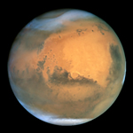

Gezegenler


Mars

| Ekvatoral çap | 6.804,9 km (0,533 Dünya çapı) |
| Kutup çapı | 6.754,8 km (0,531 Dünya çapı) |
| Basıklık | 0,007 36 |
| Yüzey alanı | 1,448×108 144 798 465 km² (0,284 Dünya yüzeyi) |
| Hacim | 1,6318×1011 km³ (0,151 Dünya hacmi) |
| Kütle | 6,4185×1023 kg (0,107 Dünya kütlesi) |
| Ana özkütle | 3,934 g/cm³ |
| Ekvatoral yerçekimi | 3,69 m/s2 (0,376g) |
| Kaçış hızı | 5,027 km/s |
| Dönme periyodu | 1,025 957 gün (24,622 962 h) |
| Dönme hızı | 868,22 km/h (ekvatorda) |
| Eksen eğikliği | 25,19°° |
| Kuzey kutbunun bahar açısı | 317,681 43° (21 h 10 d 44 s) |
| Yükselim | 52,886 50° |